🐾 냥냥 방위대
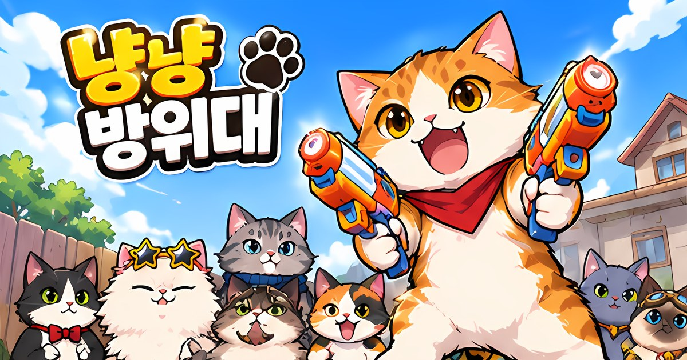
어느 날 밤, 쥐구멍에서 「찍찍 도적단」이 쏟아져 나와 집사 누나네 집 간식을 노리기 시작했어요. 우리 집 고양이가 대장이 되어 친구 고양이들과 함께 바리케이드를 지키는 무료 고양이 디펜스 웹게임이에요. 설치 없이 휴대폰 브라우저에서 바로 즐길 수 있어요.
어떻게 하나요?
- 대장 고양이 고르기 — 처음 시작할 때 우리 집 고양이와 닮은 아이를 골라 이름을 지어 줘요. 대장은 어떤 고양이든 전용 공격 「대장의 발도장」을 써요.
- 자동 전투 — 고양이들이 몰려오는 쥐와 벌레를 자동으로 공격해요. 적을 물리치면 경험치가 쌓여요.
- 레벨업 카드 — 레벨이 오를 때마다 카드 3장 중 1장을 골라요. 새 고양이 합류(NEW), 공격 강화, 각성 카드가 나와요.
- 필살기와 응원 — 고양이 얼굴을 누르면 필살기, 누나를 누르면 꾹꾹이 응원으로 바리케이드를 고쳐요.
- 키우기 — 로비에서 레벨 업, 성급 업(승급), 장비 장착으로 고양이를 강하게 만들어요. 적은 스테이지마다 점점 세져요.
스테이지
1장은 현관 → 거실 → 부엌 → 다락방, 2장은 욕실 → 베란다 → 마당까지 모두 20개 스테이지와 보스(대왕쥐, 바퀴 장군, 거미 여왕, 대왕 두꺼비, 까마귀 선장, 쥐 황제)가 기다려요. 다 깨면 더 강한 「어려움」 모드가 열려요.
고양이 친구들 (20마리)
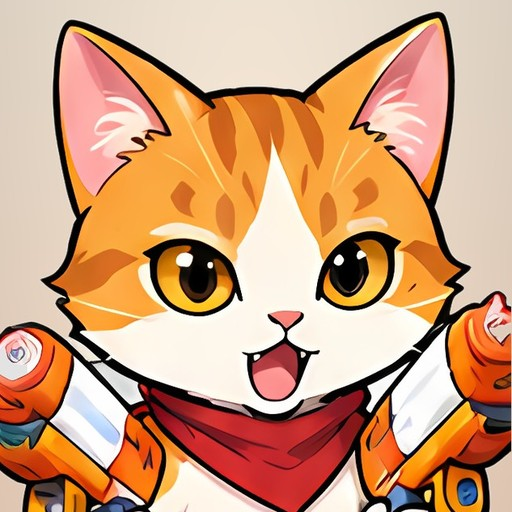
치즈 SSR반치즈 코리안숏헤어 · 리더 · 스킬 「냥냥펀치」소녀가 길에서 데려온 반치즈 코숏. 집을 지키는 냥냥 방위대의 대장이다.
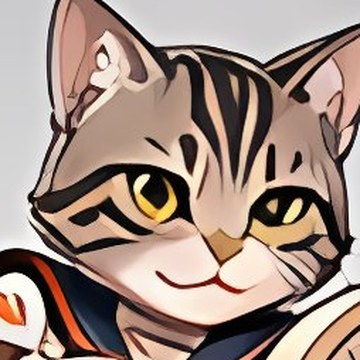
고등어 N고등어태비 코숏 · 탱커 · 스킬 「스크래처 방벽」어디서든 식빵 자세로 버티는 든든한 동네 대장.
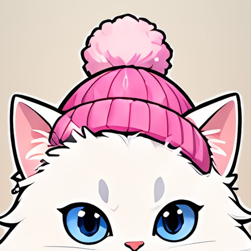
흰둥이 N흰 코숏 · 원거리 · 스킬 「털실뭉치 던지기」털뭉치 던지기를 좋아하는 하얀 코숏. 털이 많이 빠진다.
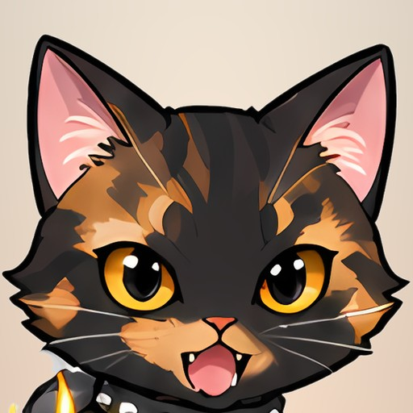
카오스 N카오스 코숏 · 돌격 · 스킬 「우다다 할퀴기」새벽 3시만 되면 우다다를 시작하는 카오스 무늬 코숏.
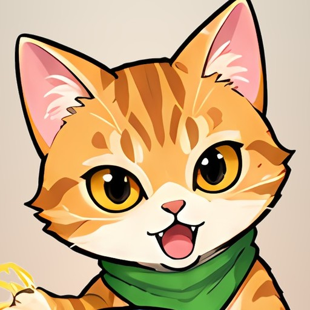
치즈태비 R치즈태비 코숏 · 근접 · 스킬 「캣휠 굴리기」온몸이 치즈색인 먹보. 치즈의 먼 친척이라는 소문이 있다.
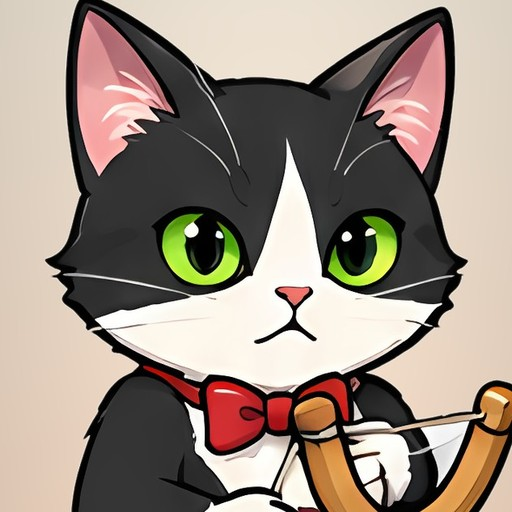
턱시도 R턱시도 코숏 · 암살 · 스킬 「방울공 저격」언제나 정장 차림인 신사 고양이. 일격이 매섭다.
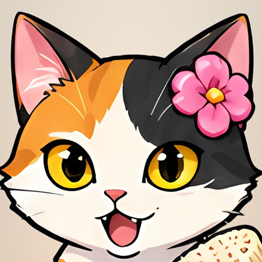
삼색이 R삼색 코숏 · 지원 · 스킬 「그루밍 수선」다친 친구를 핥아주는 다정한 삼색 고양이.
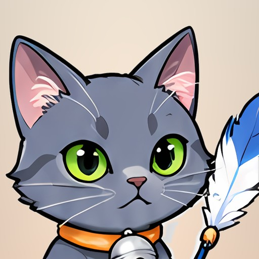
블루 SR러시안 블루 · 원거리 · 스킬 「깃털 낚싯대」낯을 가리지만 실력은 확실한 은빛 저격수.
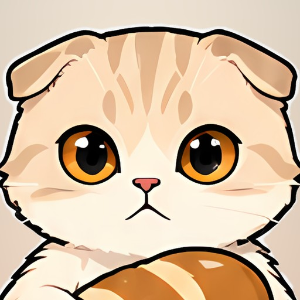
폴드 SR스코티시 폴드 · 탱커 · 스킬 「식빵 엉덩방아」동그란 얼굴과 접힌 귀. 박치기 한 방이면 벌레가 기절한다.
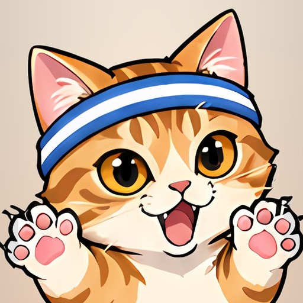
먼치 SR먼치킨 · 돌격 · 스킬 「할퀴기 연타」다리는 짧아도 누구보다 빠르다. 궁지에 몰리면 폭주한다.
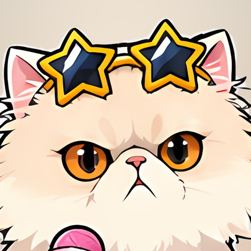
페르 SR페르시안 · 지원 · 스킬 「골골송」곁에 있기만 해도 모두가 힘이 나는 공주님 고양이.
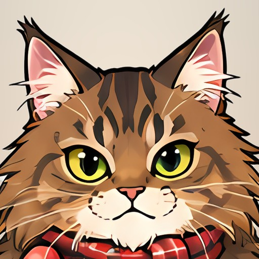
쿤 SSR메인쿤 · 광역 탱커 · 스킬 「거대 냥펀치」집채만 한 순둥이. 냥펀치 한 번에 벌레 떼가 날아간다.
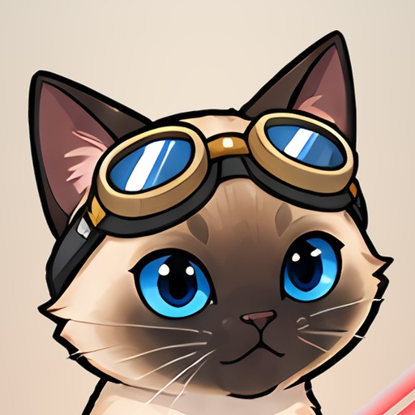
샴 SSR샴 · 저격 · 스킬 「레이저 포인터」푸른 눈의 명사수. 말이 많고 한 번 노린 벌레는 놓치지 않는다.
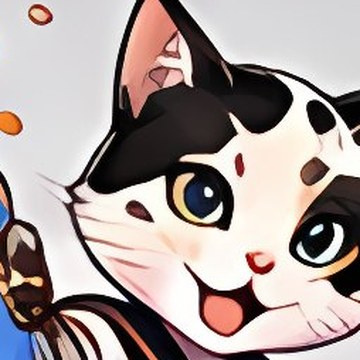
젖소 R젖소무늬 코숏 · 폭격 · 스킬 「츄르 폭탄」흑백 얼룩이 젖소를 닮은 코숏. 츄르를 아껴 먹다 폭탄처럼 던진다.
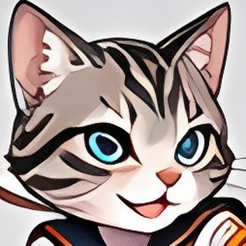
은비 R아메리칸 숏헤어 · 원거리 · 스킬 「쥐돌이 부메랑」은빛 소용돌이 무늬. 쥐돌이 장난감을 던지면 꼭 다시 받아낸다.
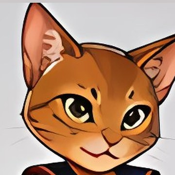
아비 R아비시니안 · 함정 · 스킬 「털뭉치 덫」호기심 많은 탐험가. 집안 곳곳에 털뭉치를 숨겨 둔다.
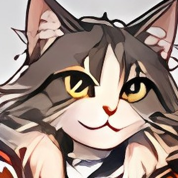
노르 SR노르웨이숲 · 연쇄 · 스킬 「정전기 쓰다듬기」겨울에 쓰다듬으면 찌릿! 털 속에 정전기가 가득하다.
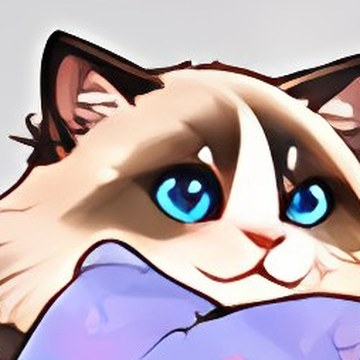
구름 SR랙돌 · 보호막 · 스킬 「꾹꾹이 쿠션」안으면 축 늘어지는 구름 같은 고양이. 꾹꾹이로 폭신한 쿠션을 만든다.
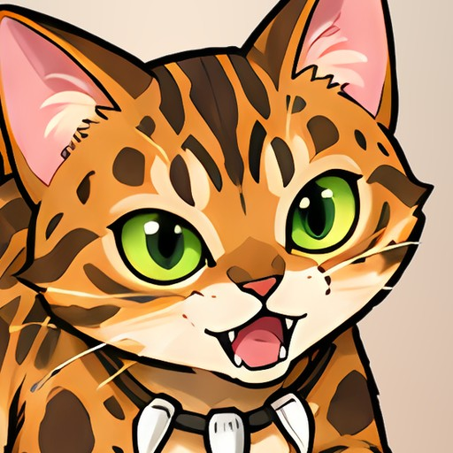
벵이 SSR벵갈 · 사냥꾼 · 스킬 「사냥 본능」작은 표범. 사냥감을 보면 눈빛이 달라진다.
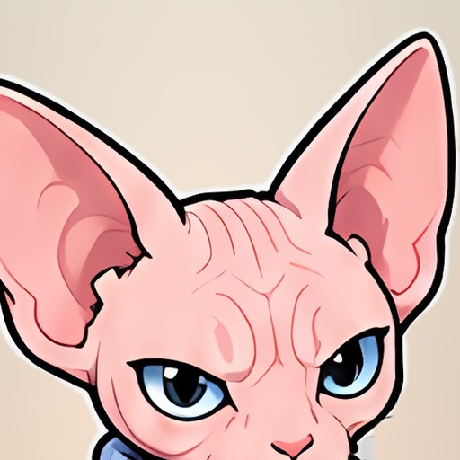
스피 SSR스핑크스 · 물대포 · 스킬 「분무기 물총」털이 없어 물이 묻어도 끄떡없다. 분무기는 이 고양이의 무기.
저장
진행은 자동으로 저장돼요. 설정에서 이메일을 연결해 두면 휴대폰을 바꿔도 이어서 할 수 있어요.